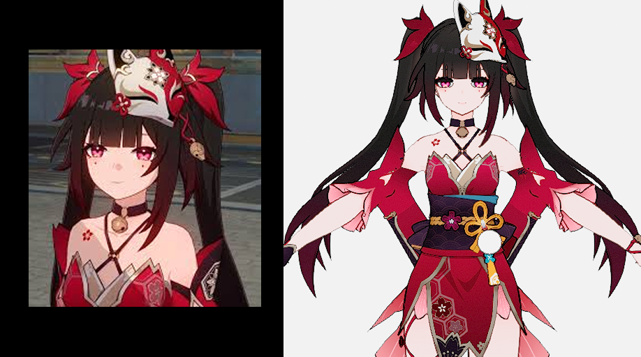

PMX to VRM Pipeline
Making community PMX characters directly usable in UE — an automated conversion pipeline preserving physics, bones, and materials
Pipeline Architecture, Tool Development
Feb 2026~ (35 commits)
Company Project
Python
TypeScript
glTF 2.0
VRM 0.x
Next.js
Web Worker
Problem
We needed to bring PMX characters from Booth/community into the project, but there was no way to convert PMX to UE-compatible VRM. Manual conversion broke bone mappings, lost physics on hair/skirts, and corrupted textures, completely changing the look.
Solution
An automated PMX to glTF to VRM conversion pipeline. Drop in a ZIP, get a UE-ready VRM out. The key requirement was preserving physics (hair, skirt, ribbon) and material look without breaking them.
Pipeline Flow
ZIP → scan .pmx → humanoid check (16 bones) → readPmx() → buildGltf() → buildVrm() → writeGlb() → renameVrm() → validate()
| Tool | User | Method |
|---|---|---|
| Python CLI | TA / Batch jobs | Batch-convert multiple models at once |
| Next.js Web App | Anyone on the team | Upload ZIP in browser, download VRM |
| Browser SPA | External / No server | Client-only conversion |
Result
| Category | Result |
|---|---|
| Conversion Rate | 90% success on major game PMX (HoYoverse, Eternal Return, Cyphers, etc.) |
| Model Coverage | Both Japanese and Chinese PMX supported |
| Conversion Speed | 393ms (Saber.pmx, 28K vertices) |

Left: Original game screenshot — Right: Viewer rendering after PMX to VRM conversion
Technical Details
Physics Conversion
SpringBone Conversion (RigidBody+Joint to VRM SpringBone)
Converts PMX Bullet Physics-based rigid bodies and joints into VRM SpringBones. Short chains (ribbons, accessories) are nearly fixed, fully rotation-locked chains are skipped, and excessive dragForce in Chinese PMX models is capped -- per-model exception handling.
Validation
6-Layer VRM Validator
GLB container, glTF spec compliance, VRM extension structure, humanoid bone completeness, SpringBone animation, material compatibility -- each layer is validated independently, so failed conversions immediately show where they got stuck.
CJK Encoding Round-Trip
Auto-detects whether texture paths, bone names, etc. in PMX files are encoded in Shift-JIS, GBK, EUC-KR, or Big5. A fallback chain decodes without mojibake, preventing missing textures.